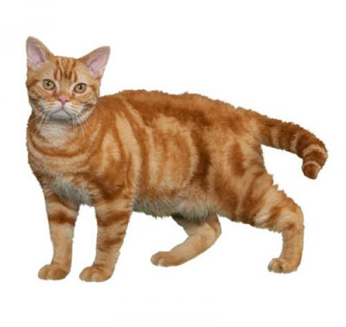
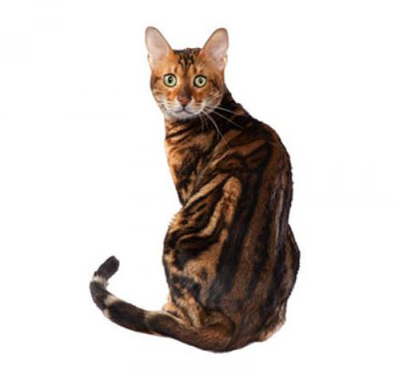

¿Estás pensando en añadir un nuevo gato a la familia? ¡Genial! Nuestro seleccionador de raza puede ayudarte a decidir qué tipo de gato podría ser tu mascota perfecta. Encontrarás la historia, su personalidad y la salud de cada raza seleccionada. Puedes comparar hasta cuatro razas a la vez. Sólo tienes que marcar la casilla correspondiente a la foto para agregar la raza a la tabla de comparación del final de la página.
| Oriental De Pelo Largo | Selkirk Rex | Abisinio |
|---|---|---|
|  | ||
| Americano De Pelo Duro | Asiático | Azul Ruso |
|  | ||
| Balinés | Bengalí | Birmano |
| Bobtail Japonés De Pelo Corto | Bobtail Japonés De Pelo Largo | Bombay |